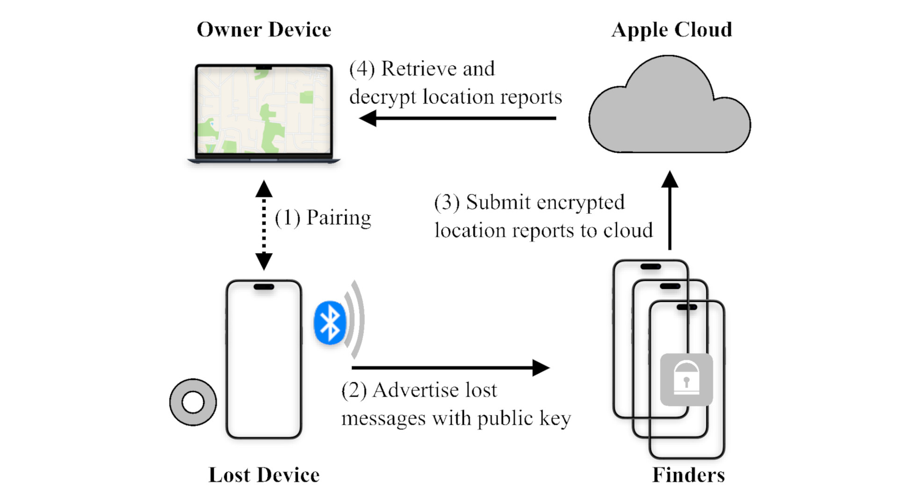

Overview of Find My Offline Finding

Figure illustrates the overview of Find My offline finding. (1) Through pairing, an AirTag shares the public / private key information with the owner’s device. (2) When the AirTag is separated from the paired device, it advertises its public key via BLE advertisements, known as lost messages. (3) Nearby Apple devices, referred to as finders, generate encrypted lo cation reports and send them, along with the hashed public key, to the Apple Cloud. (4) The Apple Cloud allows anyone to use a hashed public key to retrieve the associated location reports, which can only be decrypted using the correct private key. To ensure anonymity, finders do not authenticate whether a lost message is sent from an Apple device.